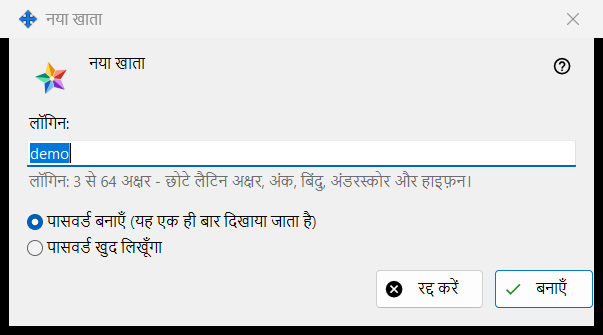
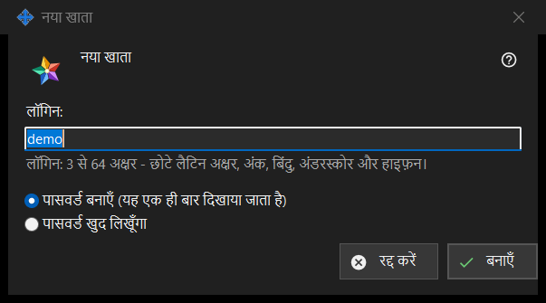

नया खाता
यह किस लिए है
एक विंडो, दो मोड। नया खाता आपके चलाए Media Exchange Server में खाता जोड़ता है; पासवर्ड रीसेट: <लॉगिन> मौजूदा खाते को नया पासवर्ड देता है। ये Share Manager की सेटिंग के Media Exchange Server पेज पर खातों की सूची के नीचे के खाता जोड़ें.. और पासवर्ड रीसेट करें.. बटनों से खुलती हैं; रीसेट के लिए खाता चुना होना ज़रूरी है।


इस क्रम में
- जोड़ने वाले मोड में लॉगिन लिखें।
- चुनें कि पासवर्ड कैसे बने।
- रीसेट मोड में तय करें कि खाते के सभी डिवाइस साइन-आउट हों या नहीं।
- बनाएँ या रीसेट करें दबाएँ।
- अगली विंडो से बना हुआ पासवर्ड कॉपी करें, या अपना पासवर्ड लिखें।
तत्व
पहले खाते के लिए कथन
बिलकुल पहले खाते पर विंडो उस पंक्ति से शुरू होती है जिसमें लिखा है: पहला खाता बनाने से पहले पढ़ें कि सर्वर का संचालक क्या देख सकता है, और उसके नीचे कथन वाला केवल-पढ़ने योग्य बॉक्स होता है। बाद के खातों और रीसेट पर यह नहीं दिखता।
लॉगिन
केवल जोड़ने वाले मोड में। 3 से 64 वर्ण: छोटे लैटिन अक्षर, अंक, बिंदु, अंडरस्कोर और हाइफ़न; बड़े अक्षर छोटे अक्षरों में बदल जाते हैं। जब तक पाठ लॉगिन नहीं हो सकता, संकेत चेतावनी के रंग में रहता है, और तब तक बनाएँ आगे नहीं बढ़ता।
पासवर्ड कैसे बनता है
पासवर्ड बनाएँ (यह एक ही बार दिखाया जाता है) डिफ़ॉल्ट है: प्रोग्राम नियमों पर खरा उतरने वाला यादृच्छिक पासवर्ड बनाता है और अगली विंडो उसे एक ही बार दिखाती है। पासवर्ड खुद लिखूँगा खाते का पासवर्ड विंडो खोलता है, जहाँ एक लाइव पंक्ति बताती है कि क्या कम है: कम से कम 10 वर्ण, एक बड़ा और एक छोटा लैटिन अक्षर और एक अंक।
हर डिवाइस साइन-आउट करें
केवल रीसेट मोड में। इस खाते के सभी डिवाइस को तुरंत साइन-आउट भी करें पर डिफ़ॉल्ट रूप से निशान लगा होता है। तब परिणाम की पंक्ति बताती है कि पासवर्ड बदल गया और खाते के सभी डिवाइस साइन-आउट हो गए; निशान के बिना वह केवल इतना बताती है कि पासवर्ड बदल गया।
सर्वर के स्वीकार करने के बाद
परिणाम की पंक्ति बताती है कि खाता बन गया। बनाया गया पासवर्ड अपनी अलग विंडो में एक ही बार दिखता है, जिसमें पासवर्ड कॉपी करें और अपना पासवर्ड सेट करें.. हैं; दूसरा बटन रीसेट पर लौटाता है, जहाँ पासवर्ड खुद लिखने वाला विकल्प चुना होता है। इस पीसी पर खातों के पासवर्ड सहेजें चालू हो तो पासवर्ड इस पीसी पर भी सहेजा जाता है और खाते को पासवर्ड दिखाएँ.. बटन मिलता है। यदि इस बिल्ड में एक्सचेंज क्लाइंट की सुविधाएँ हैं और इस पीसी का अपना कोई खाता नहीं है, तो यह इसी पासवर्ड से खाते के पहले डिवाइस के रूप में साइन इन हो जाता है।
प्रबंधक सेटिंग · SFTP साझाकरण सेटिंग · एक्सचेंज सर्वर सेटिंग